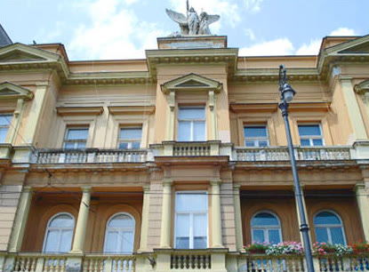

Predškola i osnovna glazbena škola
Učenici u dobi od 7 do 12 godina upisuju se u osnovnu glazbenu školu, a mlađa djeca mogu pohađati predškolsko glazbeno obrazovanje.
- Predškolska glazbena škola 2 godine
- Osnovna glazbena škola 6 godina
Osnovna i srednja glazbena škola za djecu i mlade te verificirani programi glazbenog obrazovanja za odrasle – u samome centru Zagreba, s odobrenjem Ministarstva znanosti i obrazovanja za sve programe.
Škola izvodi nastavne programe glazbenog obrazovanja za djecu, mlade i odrasle – od prvih tonova u predškoli do diplome srednje glazbene škole.
Učenici u dobi od 7 do 12 godina upisuju se u osnovnu glazbenu školu, a mlađa djeca mogu pohađati predškolsko glazbeno obrazovanje.
Srednja glazbena škola za instrumentaliste, pjevače i teorijski smjer, uz položen prijemni ispit. Pripremno obrazovanje zamjenjuje osnovnu glazbenu školu.
Glazbeno predznanje nije potrebno za osposobljavanje. Upis u programe za odrasle moguć je tijekom cijele godine.
Programe osposobljavanja i stjecanja srednje stručne spreme za odrasle odobrili su Ministarstvo znanosti, obrazovanja i sporta te Agencija za strukovno obrazovanje i obrazovanje odraslih. Škola ih izvodi od školske godine 2012./2013.
Za osposobljavanje nije potrebno glazbeno predznanje; ako postoji, trajanje se može skratiti.
Srednja glazbena škola za odrasle traje 4 godine i priprema za više i visoko glazbeno obrazovanje.
Uz prijamni ispit i konzultacije – prednost imaju upisi na početku godine zbog grupne nastave teorijskih predmeta.
Četvrtim danom radionica obilježen je završetak jesenskog ciklusa – nastupili su tamburaši škole.
Blagdanski koncert učenika i nastavnika u školi i u područnom odjelu u OŠ Gjalski.
Učenici su izveli skladbe različitih stilskih razdoblja i pokazali tehnički napredak i muzikalnost.
Nastup učenika klavira i interaktivno predavanje o etidama i baroknoj polifoniji. Moderator: Tedi Trkulja, nast.
Saksofon u 11 h, klavir u 13 h, tambura u 16 h – za sve koji žele dodatno uvježbati nastup.
Tri večeri nastupa od 19 h u Sobi 1, ulaz slobodan. Snimke su objavljene na školskom YouTube kanalu.
Proljetna glazbena radionica učenika područnog odjela škole u OŠ Gjalski.
Polaznica obrazovanja odraslih Tea Anzulović (solo pjevanje, prof. Ksenija Sanjković) osvojila je prvu nagradu na 6. Međunarodnom natjecanju mladih opernih umjetnika „Stojan Stojanov Gančev” u Zagrebu.

Sjedište i školski prostori nalaze se na Trgu kralja Tomislava 18, u prostoru opremljenom instrumentima i prilagođenom suvremenim oblicima nastave. Od jeseni 2024./25. nastava osnovne glazbene škole održava se i u područnom odjeljenju u OŠ Gjalski.